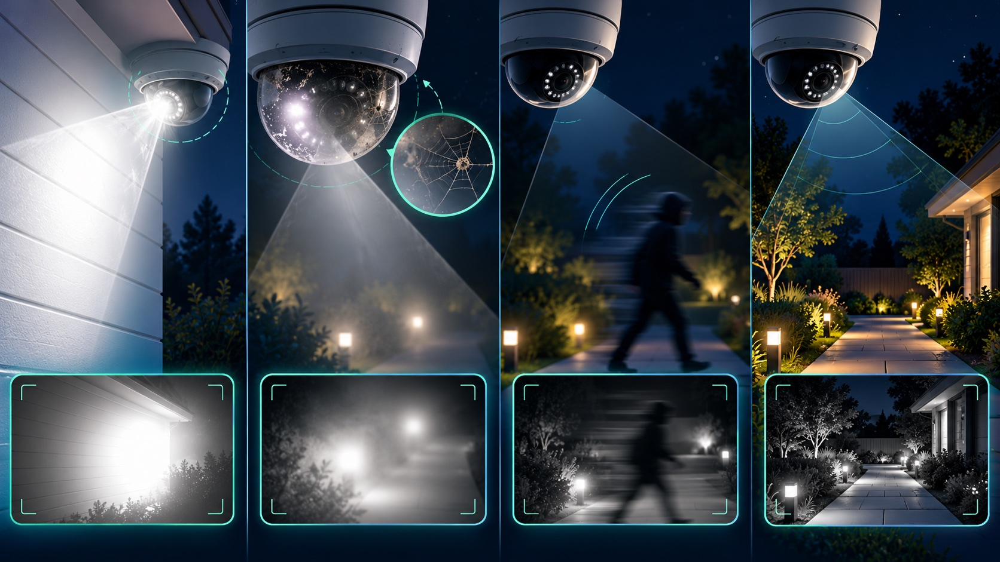

If security camera night vision is blurry, start by matching the symptom to its likely cause. A white haze or halo usually points to infrared light reflecting back into the lens. A person who is sharp while standing still but smeared while walking points to motion blur. A dark face against headlights or a bright doorway points to backlighting. Each problem needs a different fix.
Run the test after dark at the distances and paths that matter: approach the front door, walk across the driveway, and move through the gate or parking area. Pause the recorded clip on a moving person and check whether the face, clothing, and direction of travel remain usable. Also confirm the recorder time is correct and that playback actually exists; a sharp live image does not prove the system is recording. If playback is missing, use our safe DVR/NVR troubleshooting guide before changing image settings.
Built-in infrared LEDs can reflect from a nearby wall, soffit, eave, pole, window, or the inside of a dome and bounce back into the lens. Axis identifies nearby reflective objects, external lights, moisture, dirt, and dust as common causes of IR reflection. Its guidance is to keep the IR beam clear of nearby surfaces, reduce unnecessary lens tilt, clean the dome, and adjust IR intensity when the camera supports it.
See the Axis image-quality troubleshooting guide and Ubiquiti night-mode guidance for manufacturer-specific examples.
A tiny spider web, fingerprint, water droplet, or layer of dust can look minor in daylight and bloom across the image when IR switches on. Clean only with the method approved for the camera housing; a scratched plastic dome can create permanent flare. Then test again at night before changing exposure settings.
In low light, a camera may hold the shutter open longer to create a brighter image. That can make an empty scene look crisp while a moving person becomes a streak. A shorter exposure reduces motion blur, but the image may become darker or noisier as gain rises. Axis documents this exact blur-versus-noise tradeoff and recommends adding light when settings alone cannot preserve moving detail.
For placement and lighting ideas, read why security lighting and cameras work better together and our camera placement guide.
A camera can expose for a bright window, porch light, headlight, or streetlamp and leave the subject too dark. Try changing the angle so the bright source is not directly behind the subject. If the camera supports wide dynamic range (WDR), enable it and test recorded motion; WDR can recover detail across bright and dark areas, but it may introduce artifacts in some scenes.
Confirm night mode and IR illumination are enabled, the IR LEDs visibly switch in the camera interface, and no housing, gutter, plant, or cover blocks the beam. Remember that a camera's advertised IR distance is a planning reference, not proof that faces will be identifiable at that range. Scene reflectivity, angle, weather, and movement all affect the result.
Color can add useful context, but it needs enough visible light. Traditional IR mode often produces a brighter black-and-white image in darker scenes. Choose the mode that preserves the details you need instead of assuming color is always better. A well-placed low-output light can improve both color and motion clarity without shining directly into the lens.
If the image remains soft after cleaning, focusing, repositioning, and lighting changes, the camera may have a damaged dome, failing IR LEDs, moisture intrusion, or a sensor that cannot handle the scene. Before replacing everything, compare one corrected camera against one known-good test camera. Tech Secure 360 can diagnose existing systems, correct placement and lighting problems, and plan a targeted security camera upgrade for homes and businesses across Greater Los Angeles.
Sources: Axis Communications, Troubleshooting guide for image quality; Axis Communications, IR reflections in dome cameras; Ubiquiti, Optimizing Night Mode.
Tell us about your place and we'll respond within one business day with a tailored plan and pricing. Or call us right now.
Your request is in. A Tech Secure 360 specialist will reach out within one business day. Need help now? Call (747) 336-2737.